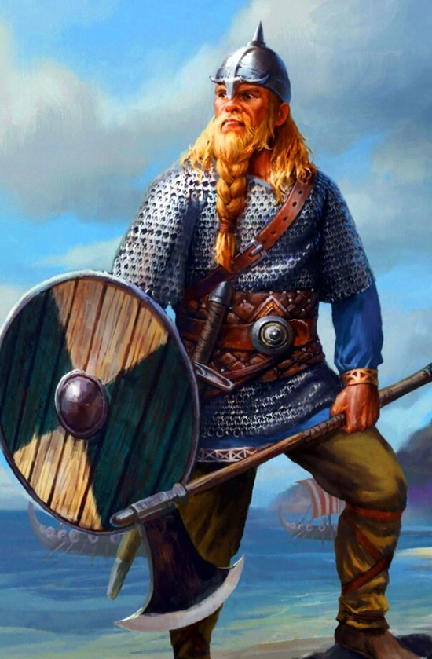
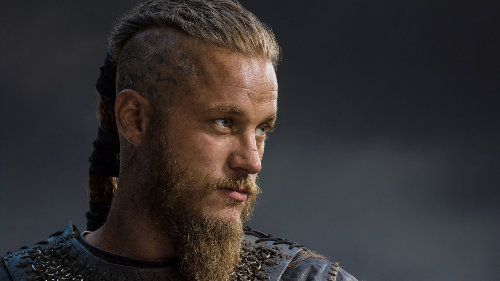
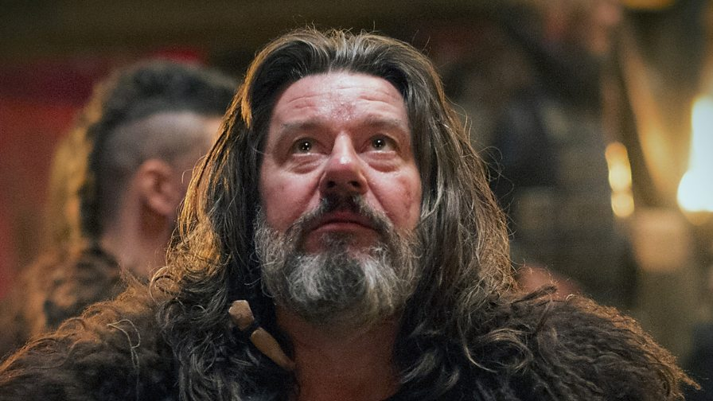

Епоха вікінгів
Епоха вікінгів
 Дани
Дани
Дани були активними учасниками походів вікінгів, які відбувалися з кінця VIII по XI століття. У цей період була освоєна Ісландія, а також створені поселення в Гренландії і Північній Америці (Вінланд). Поселення Хедебю в південній Ютландії стало важливим торговим вузлом.
Основним напрямом походів данів були Великобританія і Франція. Данський правитель Гудфред воював з Карлом Великим. Конунг Рорик Ютландський деякими істориками ототожнюється з Рюриком, засновником династії руських князів. Конунгу Рагнару Лодброку приписується захоплення Парижа, інший вікінг Ролло в результаті вдалого походу отримав землі на півночі Франції і став першим герцогом Нормандії.
В кінці IX століття данці вторглися до Англії і завоювали великі області Північно-східній Англії. Король Кнуд Великий до 1028 року об'єднав під своєю владою Данію, Норвегію і Англію, проте його держава розпалася протягом декількох років після його смерті в 1035 році. У 1086 році був убитий Кнуд IV Святий, онук Кнуда Великого. У Данії почалася міжусобиця, яка тривала до середини XII століття.
Християнізація Данії почалася в VIII столітті і пов'язана з діяльністю місіонерів Вілліброрда і Ансгара. У 960-х роках король Гаральд I Синьозубий хрестився сам і зробив християнство державною релігією. У 1104 році в Лунді було створено архієпископство. Починаючи з XI століття в Данії складалися феодальні відносини: місце родової знаті зайняли наближені короля, які одержували землю за службу.
Легендарні особи:
Рагнар Лодброк
Легенда: син шведського конунга Сігурда Кільце і брат данського конунга Гудфреда. Змолоду Рагнар брав участь у багатьох походах, завоювавши авторитет великого "морського конунга". У 845 році зібрав величезну дружину для нальоту на Західну Францію. 28 березня захопив Париж, і король франків Карл Лисий, щоб уберегти столицю від знищення, виплатив викуп в сім тисяч срібних ліврів. У 865 році Рагнар відправився грабувати вже Англію. Але флотилію розкидав шторм, і корабель конунга сів на мілину. Рагнар потрапив в полон і був доставлений до двору короля Нортумбрії Елли, який наказав кинути ватажка норманнів до ями з отруйними зміями. Помираючи, Рагнар вигукнув: "Як захрюкали б мої рідні поросята, знай вони, як зараз мені, старій свині"!, натякаючи на помсту своїх синів. І ті не підвели - зібрали величезне військо, відоме як "велика язичницька армія", і в 867 році напали на Британію. Вони полонили і жорстоко стратили короля Еллу, розграбували Нортумбрію, Мерсію і Східну Англію. Експансію "великої армії" частково мечем, частково дипломатією зміг зупинити тільки король Уессекса Альфред Великий.
Історія: існування Рагнара не до кінця підтверджено, про нього ми знаємо в основному зі скандинавських саг. Що до письмових хронік західних європейців, які розповідають про події, пов'язані з можливими діями Рагнара, то вони або не називають його імені, або взагалі створені в набагато більш пізні часи.
Епітафія: класичний вікінг-авантюрист. Людина знатного походження, всього добився сам - завдяки військовим навичкам і особистій відвазі. Здобувши в походах величезне багатство, Рагнар сколотив власне королівство, взявши під контроль частину данських і шведських земель. Однак залишився розбійником в душі. Інакше складно пояснити його останню авантюру, коли він, будучи вже в похилому віці, відправився «побешкетувати» в Нортумбрію.
Гутрум Старий
Легенда: данський вікінг, учасник походу «великої армії», під час якого здобув чималу славу, так що при розколі війська в 875 році очолив його половину. Успішно воював з Уессексом, однак після поразки при Етандуні вважав за краще укласти мир і прийняв хрещення під ім'ям Етельстан. У 880 році став королем Східної Англії. Правив до самої смерті в 890 році, зумівши передати престол своєму синові Еоріку.
Історія: крім саг, неодноразово згадується в англосаксонських хроніках, збереглися також викарбувані при ньому монети. Прізвисько «Старий» йому дали сучасні історики, щоб відрізняти від іншого короля Східної Англії Гутрума, що правив на початку X століття.
Епітафія: вікінг незнатного походження, який зумів піднятися завдяки розуму і військовим талантам. У підсумку став королем і передав владу у спадок.